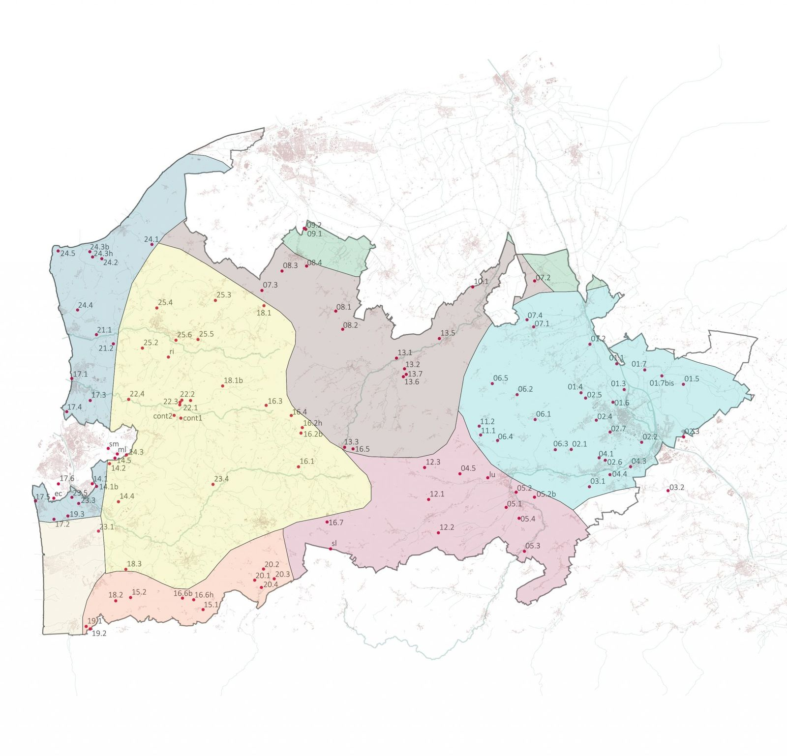
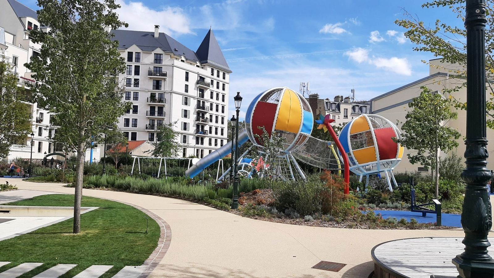
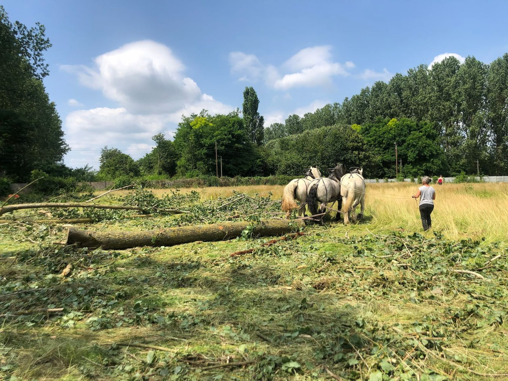
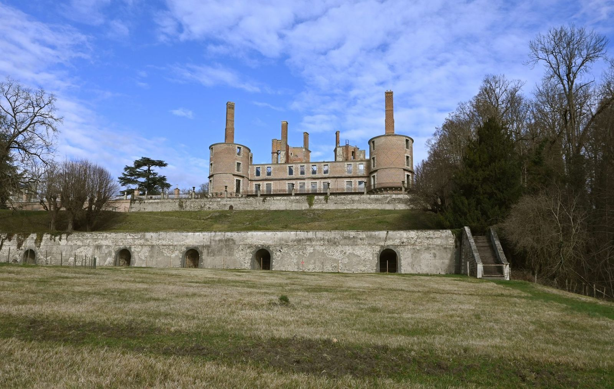

Grand Paysage
Explorer un territoire à grande échelle : évolution des paysages, stratégie d’accueil, sites remarquables.
- Types de missions
- Études
Six domaines de compétence, avec les projets qui les illustrent. Chaque nom de lieu ouvre la fiche du projet.

Explorer un territoire à grande échelle : évolution des paysages, stratégie d’accueil, sites remarquables.

Concevoir et suivre la réalisation d’espaces publics : squares, places, parvis, voies douces, cours d’école.

Reconquérir des friches industrielles en s’appuyant sur les dynamiques végétales en place, avec une gestion pensée sur plusieurs dizaines d’années.

Révéler et ouvrir au public des abbayes, châteaux et domaines.
Domaine de compétence cité par l’Atelier. Description détaillée et références à fournir par l’agence.
Domaine de compétence cité par l’Atelier. Description détaillée et références à fournir par l’agence.